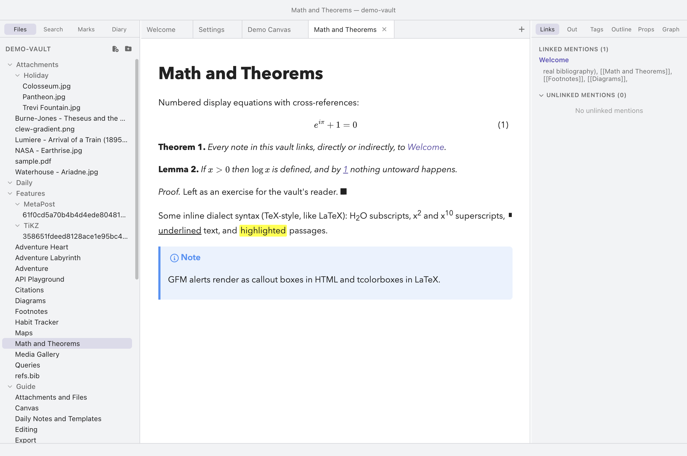

Extending Clew
Theming and CSS snippets
Clew ships with a dark theme and a light one, and every colour in both is a CSS custom property — one token set, two value sets. That makes theme switching instant, and it makes restyling the app a matter of overriding variables rather than fighting selectors. This chapter covers switching themes, what the themes reach (the whole app and rendered notes), the custom-property surface itself, and CSS snippets: per-vault stylesheets that travel with the vault.
Switching themes
Three routes to the same switch:
- Settings — ⌘,, then Appearance → Theme, a dark/light dropdown.
- The menu — View → Appearance → Dark / Light.
- The palette — ⌘P, then Toggle light/dark theme, or the explicit Use dark theme and Use light theme commands. Any of the three can be given a hotkey in the hotkey editor.
The theme is an app-global setting — it is stored with Clew's other application settings, not per vault, so every vault you open shares it.

What theming covers
A theme switch is not cosmetic trim around the edges; it propagates through all three layers of the interface:
- The app chrome — sidebars, tabs, panels, modals, the status bar — restyles instantly, because everything reads the custom properties described below.
- The editor — background, text, headings, links,
code, quotes — has its own token subset
(
--clew-heading,--clew-link,--clew-code,--clew-quote, …), so source mode keeps its syntax tinting in both themes. - Rendered notes — reading mode, note embeds on
canvases — are told about the change too. The preview document
carries a
data-themeattribute that the app updates, and the preview stylesheet swaps its own token set (--preview-bg,--preview-text,--preview-accent, …) to match. This matters because the jmarkdown engine's built-in styles assume a light printed page; Clew's preview stylesheet carries the dark-theme overrides — alerts,==highlights==, TikZ and MetaPost plates — that keep engine output legible on a dark background.
Two special cases inside rendered notes are worth knowing. Mermaid diagrams genuinely re-render on a theme switch: the preview keeps each diagram's source, re-initializes mermaid with its dark or default (light) theme, and redraws — so diagram text and lines follow the app rather than being baked into one look. Code highlighting does not switch: syntax colours in fenced code blocks come from highlight.js's Atom One Dark scheme in both themes (the block's background does follow the theme). Interactive maps adapt too — in the dark theme, map tiles are filtered to match unless a map opts out.
The theming surface: custom properties
Both themes are defined in one place each:
styles/themes/dark.css and
styles/themes/light.css in Clew's source, each a single
rule on body[data-theme='dark'] or
body[data-theme='light'] assigning the full token set. The
important groups, with representative names:
| Group | Tokens (representative) | Control |
|---|---|---|
| Surfaces | --clew-bg-primary, --clew-bg-secondary, --clew-bg-tertiary, --clew-border | Window, panel, and control backgrounds; every border |
| Text | --clew-text-normal, --clew-text-muted, --clew-text-faint | The three text emphasis levels used everywhere |
| Accent | --clew-accent, --clew-accent-hover, --clew-selection, --clew-active-item | The purple: active states, selection, links in chrome |
| Feedback | --clew-danger, --clew-search-match, --clew-search-match-selected | Destructive affordances and search highlights |
| Editor content | --clew-heading, --clew-formatting, --clew-link, --clew-code, --clew-quote | Source-mode tinting |
| Canvas | --clew-canvas-bg, --clew-canvas-node-bg, --clew-canvas-edge, --clew-canvas-ink, --clew-canvas-1 … --clew-canvas-6 | The canvas surface and its six named node/stroke colours |
| Typography | --clew-ui-font, --clew-editor-font, --clew-mono-font, --clew-editor-font-size, --clew-editor-line-width | Font stacks and editor metrics |
The last two tokens are also settings: Settings → Appearance's
Editor font size and Editor line width write
--clew-editor-font-size and
--clew-editor-line-width directly, which is why they apply
without a restart. The same mechanism is available to you — any token
can be overridden from a snippet.
CSS snippets
Snippets are Clew's user-CSS mechanism, and the mechanism is a folder:
drop .css files into .clew/snippets/ inside
the vault, and every one of them is injected into the app window when
the vault opens. There is no manifest and no enable switch — a file
present in the folder is active, a file removed is gone. Because
snippets live in the vault's own .clew/ folder, they travel
with it: clone a shared vault and you get its look along with its notes.
The canonical first snippet overrides the accent colour:
You write (.clew/snippets/accent.css)
/* A calmer blue accent in the dark theme. */
body[data-theme='dark'] {
--clew-accent: #4a9ed8;
--clew-accent-hover: #6cb4e4;
}
Scoping the rule to body[data-theme='dark'] keeps the light
theme untouched; scope to body[data-theme='light'] for the
reverse, or plain body for both. And snippets are not
limited to variables — they are ordinary CSS, loaded after Clew's own
stylesheets, so they can restyle any part of the chrome, the panels, or
the editor.
.clew/snippets/ with any file manager and reopen the
vault; nothing else is affected.
Styling the app versus styling rendered notes
One boundary matters when you start theming in earnest: snippets style
the app window — chrome, panels, editor, canvas. A rendered
note is a separate document (reading mode runs in its own preview
frame), so app snippets do not reach inside it. Its look comes from the
engine's own styles plus Clew's preview stylesheet, keyed to the same
theme switch via the frame's data-theme attribute and the
--preview-* tokens.
To add styling inside every rendered note, use the JS twin of
the snippets convention: vault scripts. Files in
.clew/scripts/*.js are loaded into every rendered note, and
a one-line script that appends a <style> element
restyles all previews:
You write (.clew/scripts/preview-style.js)
document.head.insertAdjacentHTML('beforeend', `<style>
blockquote { font-style: italic; }
h1, h2 { letter-spacing: -0.01em; }
</style>`);
A vault plugin with a preview surface can do
the same with more structure. For per-note styling rather than per-vault,
a note can of course carry its own <style> element —
see How rendering works.
--clew-* variable, and the inspector shows which.
.obsidian/snippets/ and target Obsidian's own class names
and variables — they have no effect on Clew, and Clew's snippets in
.clew/snippets/ have no effect on Obsidian. The two
styling systems coexist in one vault without interference. Notes
themselves are untouched by any of this: theming never writes to your
files.
Reference
| What | Where | Notes |
|---|---|---|
| Theme setting | Settings → Appearance → Theme; View → Appearance; palette commands | App-global; dark is the default |
| Theme definitions | styles/themes/dark.css, styles/themes/light.css (Clew source) | One rule each on body[data-theme]; identical token sets |
| App theming surface | --clew-* custom properties | Surfaces, text, accent, editor content, canvas, typography |
| Preview theming surface | --preview-* custom properties on the preview document | Follows the app theme via data-theme |
| CSS snippets | <vault>/.clew/snippets/*.css | All files load at vault open; no manifest; app window only |
| Preview styling | <vault>/.clew/scripts/*.js, or a plugin preview surface | Scripts load into every rendered note |
| Mermaid diagrams | Re-rendered on theme switch | Dark theme in dark mode, default in light |
| Code highlighting | highlight.js Atom One Dark | Fixed scheme in both themes; block background follows the theme |
| Editor metrics | Settings → Appearance | Font size and line width write the corresponding tokens live |
See also
- Settings and hotkeys — the Appearance section and everything else in the settings tab.
- How rendering works — the preview pipeline that snippets cannot reach and vault scripts can.
- Vault plugins — the structured way to extend previews and the app.
- The Note API — scripts inside notes, for behaviour rather than looks.